Scenario:
The Wowza Sport website recently came under a suspected cyberattack. Internal stakeholders believe that a rival competitor may be behind the incident. On the day of the attack, monitoring systems detected a sudden and abnormal surge in incoming web requests, overwhelming the company’s online services.
Your task is to investigate the compromised web server, which also functions as the domain controller for the Wowza Sport environment. You are expected to analyze logs, identify the source and method of the attack, and assess the potential impact on both the website and the organization’s Active Directory infrastructure
Executive Summary
The Wowza Sport web server, which also functioned as the domain controller, was compromised following external reconnaissance from IP address 47.128.63.0. The attacker first identified the site as running WordPress using Nmap and WPScan, then exploited a SQL injection vulnerability in the Perfect Survey plugin to extract password hashes from the wp_users table. After cracking the user_pass hash, the attacker authenticated as mourinho.j, conducted a Kerberoasting attack against alonso.x, and successfully compromised that account. Leveraging the elevated access, the attacker created a rogue machine account (MADRID$), configured Resource-Based Constrained Delegation (msDS-AllowedToActOnBehalfOfOtherIdentity), and requested Kerberos service tickets to pivot laterally. The attack culminated in abuse of Active Directory Certificate Services (AD CS) using the vulnerable WorkstationAuth_Internal template to request a certificate for Administrator, enabling full domain privilege escalation and complete compromise of the Active Directory environment.
Q1:
The attacker performed service enumeration on the target web server to identify the content management system. What CMS platform was discovered hosting the website?
Upon entering the environment, I immediately thought of nmap for service enumeration. to discover any nmap activity, i performed a simple query as seen here:
index=main nmapand got the following output:
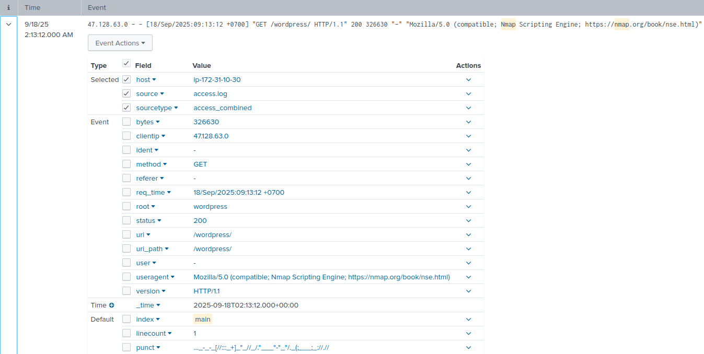
I observed Nmap reconnaissance activity targeting host 172.31.10.30, originating from 47.128.63.0. The request to /wordpress/ returned HTTP 200, suggesting a WordPress installation may be present on the server.
User-Agent: Mozilla/5.0 (compatible; Nmap Scripting Engine; https://nmap.org/book/nse.html)
Within the log, we clearly see a request to WordPress, indicating it is the CMS in question.
Q2:
A specialized scanning tool was deployed to enumerate CMS-specific vulnerabilities. What is the name and version of the scanning tool used against the CMS?
In the picture above, I saw:
source: access.logsourcetype: access_combined
To find the tool used for scanning, I shifted my focus to the user agent. The user-agent field is where scanning tools usually identify themselves.
index=main source="access.log"
| stats count by useragentFrom here, we get 4 results:
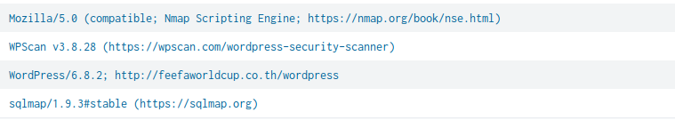
The User-Agent analysis immediately revealed the presence of WPScan v3.8.28, which stood out due to its specific purpose of identifying WordPress-related vulnerabilities. Unlike the other tools observed (Nmap and sqlmap), WPScan is explicitly designed for CMS enumeration and vulnerability assessment targeting WordPress installations, making it directly relevant to this investigation.
Q3:
Throughout the attack chain, all malicious traffic originated from a single source IP address used by the threat actor. What is the IP address that the threat actor used for their attack?
Luckily for me, I documented the IP of 47.128.63.0 conducting nmap activity on our host in an earlier question which was tied to the threat actor.
Q4:
The scanner identified a vulnerable third-party plugin installed on the CMS. What is the name of this vulnerable plugin?
To identify the vulnerable third-party plugin, I focused on activity generated by WPScan, specifically reviewing HTTP 200 (successful) responses related to plugin enumeration. During this analysis, I observed a request to at 9/18/25 2:20:16.000 AM:
/wordpress/wp-content/plugins/perfect-survey/readme.txt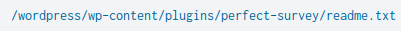
The presence of this path confirms that the Perfect Survey plugin is installed on the WordPress instance. Since WPScan was actively enumerating plugins and successfully accessed the plugin’s readme file, this indicates that Perfect Survey is the third-party plugin identified as vulnerable during the scan.
Q5:
The attacker attempted to exploit the vulnerable plugin for remote code execution. At what exact timestamp did the scanning tool attempt the RCE exploit? (in 24-hour format)
To identify this, I quickly turned to research. We know Perfect Survey was enumeration and potentially exploited. So i looked up Perfect survey vulnerabilities and I found this:
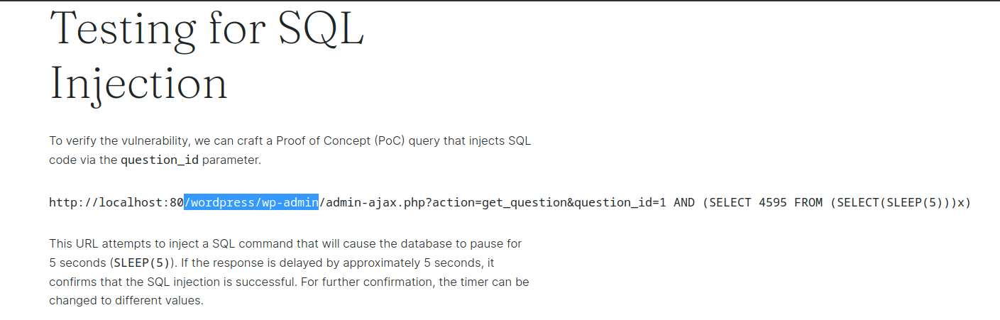
We see the vulnerability exploit utilizes SQl, and targets the /wordpress/wp-admin/admin-ajax.php path.
So I crafted a simply query to try and identify any events of this happening.
index=main clientip=47.128.63.0 */wordpress/wp-admin/admin-ajax.php* status=200
| sort _timeWith this, I immediatly spot the following:
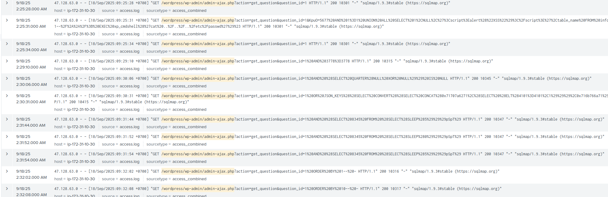
I see an overwhelming amount of SQL injection events initiating on 2025-09-18 02:25 heavily indicating the perfect-survey plug-in vulnerability was being exploited.
Q6:
An automated tool was used to extract password hashes from the CMS database. What database field name did the tool extract containing the password hash?
The extracted database field was user_pass. In WordPress, user credentials are stored in the wp_users table, and the user_pass column specifically contains the hashed passwords. The automated tool leveraged the SQL injection vulnerability to enumerate the database structure and retrieve this field, which stores the password hashes for user accounts.
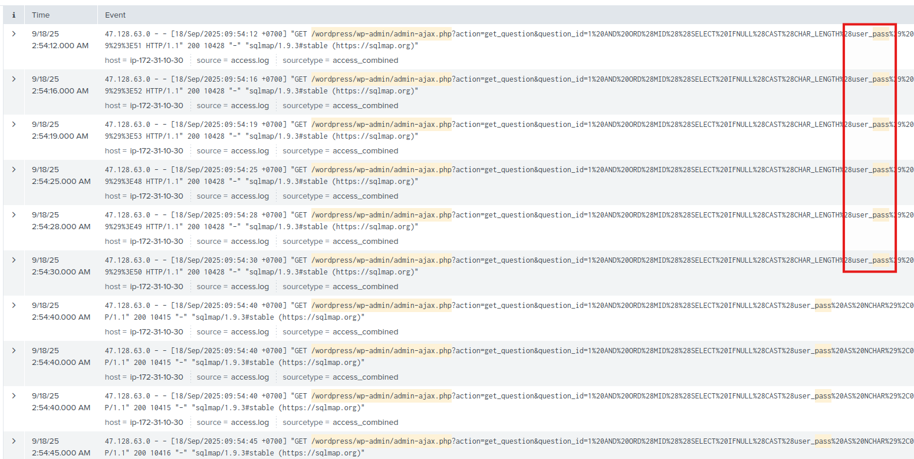
Q7:
After cracking the extracted hash, the attacker gained valid server credentials. Which user's password was compromised for initial authentication?
To identify the compromised account, I analyzed all Event ID 4624 (successful logon) events within the relevant timeframe following the SQL injection and credential extraction activity. By reviewing the TargetUserName field across these logon events, I observed repeated successful logons associated with the account mourinho.j, indicating that this user account was likely compromised and subsequently used by the attacker.
Q8:
A Kerberoasting attack was conducted after compromising the first user. Which user was targeted by this attack?
To identify the user targeted in the Kerberoasting attack, I analyzed Event ID 4769, which logs Kerberos Ticket Granting Service (TGS) requests. Kerberoasting activity is characterized by attackers requesting service tickets for accounts associated with a Service Principal Name (SPN). These service tickets are encrypted using the service account’s NTLM hash, allowing attackers to extract and attempt offline password cracking.
Threat actors often target service accounts configured with weak encryption types (e.g., RC4) or weak passwords, as this significantly reduces cracking time. By reviewing 4769 events and identifying abnormal or high-volume TGS requests for specific SPN-enabled accounts, I was able to determine the user account targeted during the Kerberoasting attempt.
index=main Event.System.EventID=4769
| stats count by Event.EventData.TargetUserName, Event.EventData.TicketEncryptionType, Event.EventData.TargetDomainName, Event.EventData.ServiceNameWith the above query, i got an interesting result:
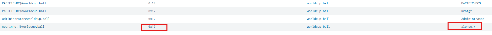
At 9/18/25 2:40:44.913 AM we see the compromised user, mourinho.j request a TGS ticket for alonso.x with an RC4 encryption! Then, 10 minutes later on 2:50:30.741 AM, we see a successful logon event tied to alonso.x from the malicious IP which indicates the TGS ticket was successfully cracked.
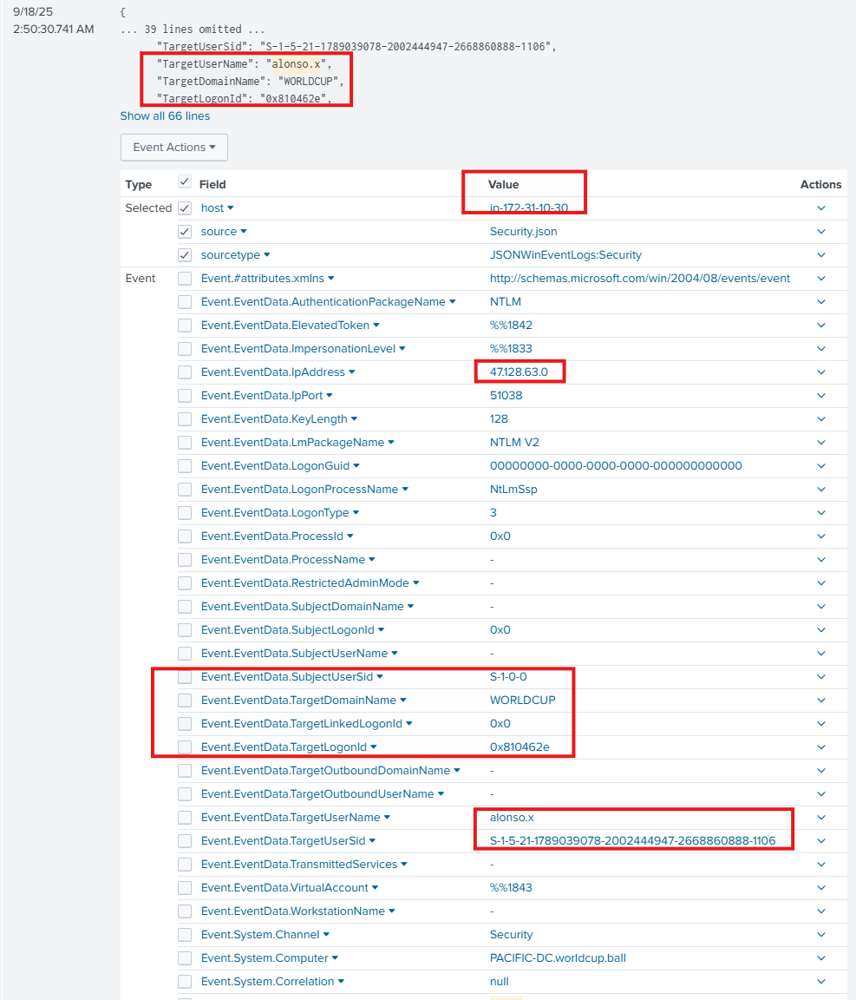
Q9:
A new account was created in preparation for a domain privilege escalation. What is the name of this machine account?
Following the events that transpired the previous successful logon, we then see the malicious actor create a new computer account named MADRID$ under alonso.x context.
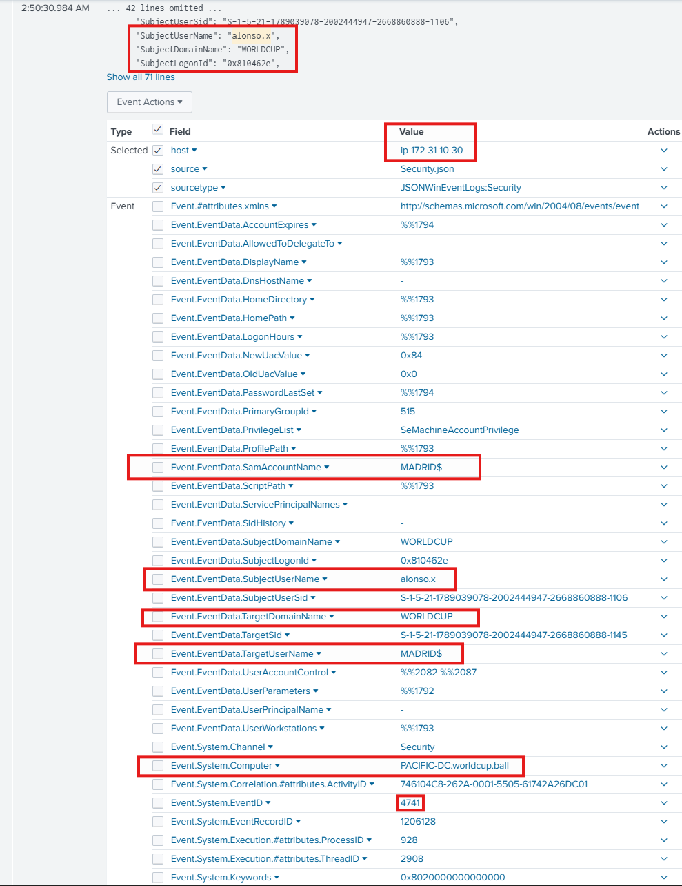
Q10:
The attacker modified an AD attribute to enable Resource-Based Constrained Delegation. Which specific attribute was modified on the computer account?
The attribute modified for this to happen was: msDS-AllowedToActOnBehalfOfOtherIdentity.
In Active Directory (AD) delegation allows impersonating other user accounts on target computer accounts after delegation permissions for them were granted. There are mainly three types of delegation: Unconstrained, Constrained and Resource Based Constrained.
Delegation allows one account (usually a service or computer account) to:
Act on behalf of another user to access a resource.
Normal delegation example:
- User logs into Web Server
- Web Server needs to access SQL Server
- SQL Server must trust Web Server to delegate the user’s identity
HOwever, Resource-Based constrained delegation flips the trust direction. instead of "Web-server can delegate to SQL", it now becomes "SQL allows Web Server to act on behalf of users".
Q11:
The attacker requested a service ticket through the configured Resource-Based Constrained Delegation chain. Which account was targeted for the service ticket request via RBCD?
The targeted account for the service ticket request via RBCD was APP-BKUP01$.
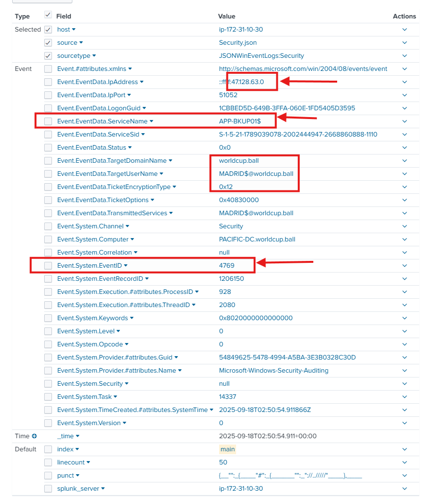
At 9/18/2025 02:50:54.911 AM, the logs show the external IP address 47.128.63.0 requesting a Kerberos TGS (Event ID 4769) using the newly created rogue machine account MADRID$ to access the service APP-BKUP01$. This request originated directly from the attacker-controlled IP, strongly indicating abuse of the machine account following its creation.
The ticket was issued using encryption type 0x12 (AES256), which is stronger than the RC4 encryption observed earlier; however, the encryption strength does not reduce the significance of the activity. The key concern is the unauthorized TGS request from a newly created machine account immediately after RBCD configuration, which strongly suggests active delegation abuse and privilege escalation.
Q12:
The attacker exploited Active Directory Certificate Services to obtain privileged account hashes. Which high-privilege account was targeted through AD CS escalation?
at 2025-09-18 02:54:24 UTC, we see an event code 4886 which indicates that a certificate request was submitted to a Certificate Authority.
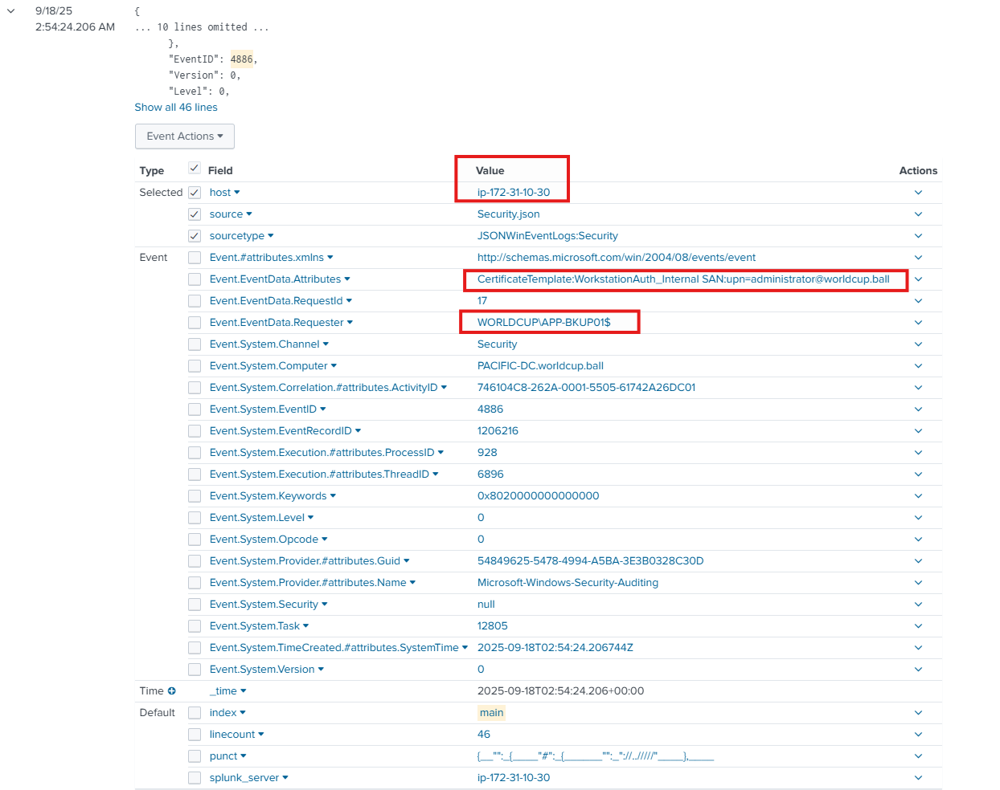
We see APP.BKUP01$ request the certificate, which if we look back, APP.BKUP01$ was accessed via RBCD abuse.
The request includes: SAN: upn=administrator@worldcup.ball which means the certificate was being requested for the Administrator account And used CertificateTemplate:WorkstationAuth_Internal as the template!
So overall, the attacker:
- Abused RBCD to control APP-BKUP01$.
- Used that access to request a certificate.
- Specified: SAN: administrator@worldcup.ball.
- The CA issued a certificate that authenticates as Administrator.
- The attacker can now use the certificate for full domain compromise.
Q13:
A misconfigured certificate template enabled the AD CS privilege escalation. What is the name of the vulnerable certificate template exploited?
This was observed in the Attributes field of the previous question: WorkstationAuth_Internal
Indicators of Compromise (IOC)
| IOC Type | Indicator | Description |
|---|---|---|
| Attacker IP | 47.128.63.0 | Source IP used throughout malicious activity |
| Target Host | 172.31.10.30 | Targeted Wowza Sport web server / domain controller |
| CMS | WordPress | Content management system discovered during enumeration |
| Scanning Tool | WPScan v3.8.28 | CMS-specific scanner used against WordPress |
| Scanning Tool | Nmap Scripting Engine | Service enumeration activity observed in web logs |
| User-Agent | Mozilla/5.0 (compatible; Nmap Scripting Engine; https://nmap.org/book/nse.html) | Nmap user-agent observed during reconnaissance |
| Vulnerable Plugin | Perfect Survey | WordPress plugin identified and exploited |
| Plugin Path | /wordpress/wp-content/plugins/perfect-survey/readme.txt | Plugin enumeration path successfully accessed |
| Exploit Path | /wordpress/wp-admin/admin-ajax.php | Path targeted during SQL injection activity |
| Database Table | wp_users | WordPress users table targeted for credential extraction |
| Database Field | user_pass | Password hash field extracted by the automated tool |
| Compromised User | mourinho.j | Initial authenticated account used after hash cracking |
| Kerberoasting Target | alonso.x | User targeted through Kerberos TGS request activity |
| Rogue Machine Account | MADRID$ | Machine account created for privilege escalation activity |
| AD Attribute | msDS-AllowedToActOnBehalfOfOtherIdentity | Attribute modified to enable Resource-Based Constrained Delegation |
| RBCD Service Ticket Target | APP-BKUP01$ | Account targeted for service ticket request via RBCD |
| AD CS Target | Administrator | High-privilege account targeted through certificate abuse |
| Certificate SAN | administrator@worldcup.ball | UPN specified in the certificate request |
| Certificate Template | WorkstationAuth_Internal | Misconfigured AD CS template used for escalation |
| Event ID | 4624 | Successful logon events reviewed for compromised account activity |
| Event ID | 4769 | Kerberos TGS request events associated with Kerberoasting and RBCD activity |
| Event ID | 4886 | Certificate request submitted to Certificate Authority |
| RCE / SQLi Activity Time | 2025-09-18 02:25 | Observed time when SQL injection exploitation activity initiated |
| Kerberoasting Time | 2025-09-18 02:40:44.913 | TGS request for alonso.x using RC4 encryption |
| Compromised Logon Time | 2025-09-18 02:50:30.741 | Successful logon tied to alonso.x from the malicious IP |
| RBCD Ticket Time | 2025-09-18 02:50:54.911 | MADRID$ requested a TGS for APP-BKUP01$ |
| AD CS Request Time | 2025-09-18 02:54:24 UTC | Certificate request submitted for Administrator |